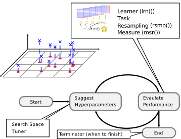

3.1 Hyperparameter Tuning
Hyperparameters are second-order parameters of machine learning models that, while often not explicitly optimized during the model estimation process, can have an important impact on the outcome and predictive performance of a model. Typically, hyperparameters are fixed before training a model. However, because the output of a model can be sensitive to the specification of hyperparameters, it is often recommended to make an informed decision about which hyperparameter settings may yield better model performance. In many cases, hyperparameter settings may be chosen a priori, but it can be advantageous to try different settings before fitting your model on the training data. This process is often called model ‘tuning.’
Hyperparameter tuning is supported via the mlr3tuning extension package. Below you can find an illustration of the process:

At the heart of mlr3tuning are the R6 classes:
TuningInstanceSingleCrit,TuningInstanceMultiCrit: These two classes describe the tuning problem and store the results.Tuner: This class is the base class for implementations of tuning algorithms.
3.1.1 The TuningInstance* Classes
The following sub-section examines the optimization of a simple classification tree on the Pima Indian Diabetes data set.
library("mlr3verse")
task = tsk("pima")
print(task)## <TaskClassif:pima> (768 x 9)
## * Target: diabetes
## * Properties: twoclass
## * Features (8):
## - dbl (8): age, glucose, insulin, mass, pedigree, pregnant, pressure,
## tricepsWe use the classification tree from rpart and choose a subset of the hyperparameters we want to tune. This is often referred to as the “tuning space.”
learner = lrn("classif.rpart")
learner$param_set## <ParamSet>
## id class lower upper nlevels default value
## 1: minsplit ParamInt 1 Inf Inf 20
## 2: minbucket ParamInt 1 Inf Inf <NoDefault[3]>
## 3: cp ParamDbl 0 1 Inf 0.01
## 4: maxcompete ParamInt 0 Inf Inf 4
## 5: maxsurrogate ParamInt 0 Inf Inf 5
## 6: maxdepth ParamInt 1 30 30 30
## 7: usesurrogate ParamInt 0 2 3 2
## 8: surrogatestyle ParamInt 0 1 2 0
## 9: xval ParamInt 0 Inf Inf 10 0
## 10: keep_model ParamLgl NA NA 2 FALSEHere, we opt to tune two parameters:
- The complexity
cp - The termination criterion
minsplit
The tuning space needs to be bounded, therefore one has to set lower and upper bounds:
search_space = ps(
cp = p_dbl(lower = 0.001, upper = 0.1),
minsplit = p_int(lower = 1, upper = 10)
)
search_space## <ParamSet>
## id class lower upper nlevels default value
## 1: cp ParamDbl 0.001 0.1 Inf <NoDefault[3]>
## 2: minsplit ParamInt 1.000 10.0 10 <NoDefault[3]>Next, we need to specify how to evaluate the performance.
For this, we need to choose a resampling strategy and a performance measure.
hout = rsmp("holdout")
measure = msr("classif.ce")Finally, one has to select the budget available, to solve this tuning instance.
This is done by selecting one of the available Terminators:
- Terminate after a given time (
TerminatorClockTime) - Terminate after a given amount of iterations (
TerminatorEvals) - Terminate after a specific performance is reached (
TerminatorPerfReached) - Terminate when tuning does not improve (
TerminatorStagnation) - A combination of the above in an ALL or ANY fashion (
TerminatorCombo)
For this short introduction, we specify a budget of 20 evaluations and then put everything together into a TuningInstanceSingleCrit:
library("mlr3tuning")## Loading required package: paradoxevals20 = trm("evals", n_evals = 20)
instance = TuningInstanceSingleCrit$new(
task = task,
learner = learner,
resampling = hout,
measure = measure,
search_space = search_space,
terminator = evals20
)
instance## <TuningInstanceSingleCrit>
## * State: Not optimized
## * Objective: <ObjectiveTuning:classif.rpart_on_pima>
## * Search Space:
## <ParamSet>
## id class lower upper nlevels default value
## 1: cp ParamDbl 0.001 0.1 Inf <NoDefault[3]>
## 2: minsplit ParamInt 1.000 10.0 10 <NoDefault[3]>
## * Terminator: <TerminatorEvals>
## * Terminated: FALSE
## * Archive:
## <ArchiveTuning>
## Null data.table (0 rows and 0 cols)To start the tuning, we still need to select how the optimization should take place.
In other words, we need to choose the optimization algorithm via the Tuner class.
3.1.2 The Tuner Class
The following algorithms are currently implemented in mlr3tuning:
- Grid Search (
TunerGridSearch) - Random Search (
TunerRandomSearch) (Bergstra and Bengio 2012) - Generalized Simulated Annealing (
TunerGenSA) - Non-Linear Optimization (
TunerNLoptr)
In this example, we will use a simple grid search with a grid resolution of 5.
tuner = tnr("grid_search", resolution = 5)Since we have only numeric parameters, TunerGridSearch will create an equidistant grid between the respective upper and lower bounds.
As we have two hyperparameters with a resolution of 5, the two-dimensional grid consists of \(5^2 = 25\) configurations.
Each configuration serves as a hyperparameter setting for the previously defined Learner which is then fitted on the task using the provided Resampling.
All configurations will be examined by the tuner (in a random order), until either all configurations are evaluated or the Terminator signals that the budget is exhausted.
3.1.3 Triggering the Tuning
To start the tuning, we simply pass the TuningInstanceSingleCrit to the $optimize() method of the initialized Tuner.
The tuner proceeds as follows:
- The
Tunerproposes at least one hyperparameter configuration (theTunermay propose multiple points to improve parallelization, which can be controlled via the settingbatch_size). - For each configuration, the given
Learneris fitted on theTaskusing the providedResampling. All evaluations are stored in the archive of theTuningInstanceSingleCrit. - The
Terminatoris queried if the budget is exhausted. If the budget is not exhausted, restart with 1) until it is. - Determine the configuration with the best observed performance.
- Store the best configurations as result in the instance object.
The best hyperparameter settings (
$result_learner_param_vals) and the corresponding measured performance ($result_y) can be accessed from the instance.
tuner$optimize(instance)## INFO [08:35:58.307] [bbotk] Starting to optimize 2 parameter(s) with '<OptimizerGridSearch>' and '<TerminatorEvals> [n_evals=20]'
## INFO [08:35:58.350] [bbotk] Evaluating 1 configuration(s)
## INFO [08:35:58.597] [bbotk] Result of batch 1:
## INFO [08:35:58.599] [bbotk] cp minsplit classif.ce uhash
## INFO [08:35:58.599] [bbotk] 0.07525 3 0.2578 f7f10985-68a5-4d47-bc39-93ae7dd8e5a4
## INFO [08:35:58.601] [bbotk] Evaluating 1 configuration(s)
## INFO [08:35:58.710] [bbotk] Result of batch 2:
## INFO [08:35:58.712] [bbotk] cp minsplit classif.ce uhash
## INFO [08:35:58.712] [bbotk] 0.02575 3 0.2383 fdc2ed30-39a3-46f4-8aa4-ea2e93367e75
## INFO [08:35:58.714] [bbotk] Evaluating 1 configuration(s)
## INFO [08:35:58.835] [bbotk] Result of batch 3:
## INFO [08:35:58.837] [bbotk] cp minsplit classif.ce uhash
## INFO [08:35:58.837] [bbotk] 0.1 10 0.2578 a9b1cd19-e4a5-46ed-9816-c119e140b301
## INFO [08:35:58.839] [bbotk] Evaluating 1 configuration(s)
## INFO [08:35:58.939] [bbotk] Result of batch 4:
## INFO [08:35:58.941] [bbotk] cp minsplit classif.ce uhash
## INFO [08:35:58.941] [bbotk] 0.07525 1 0.2578 2c520df1-f22d-4121-a43a-156d46d05f78
## INFO [08:35:58.943] [bbotk] Evaluating 1 configuration(s)
## INFO [08:35:59.049] [bbotk] Result of batch 5:
## INFO [08:35:59.051] [bbotk] cp minsplit classif.ce uhash
## INFO [08:35:59.051] [bbotk] 0.0505 5 0.2578 95001a36-e687-4c12-8ca9-53b2c092320e
## INFO [08:35:59.053] [bbotk] Evaluating 1 configuration(s)
## INFO [08:35:59.172] [bbotk] Result of batch 6:
## INFO [08:35:59.174] [bbotk] cp minsplit classif.ce uhash
## INFO [08:35:59.174] [bbotk] 0.07525 5 0.2578 ae02395e-980d-4af5-b258-2766fce348a6
## INFO [08:35:59.176] [bbotk] Evaluating 1 configuration(s)
## INFO [08:35:59.280] [bbotk] Result of batch 7:
## INFO [08:35:59.282] [bbotk] cp minsplit classif.ce uhash
## INFO [08:35:59.282] [bbotk] 0.001 5 0.3086 ee121062-0a02-45fa-bf80-6ae1dc13c144
## INFO [08:35:59.284] [bbotk] Evaluating 1 configuration(s)
## INFO [08:35:59.381] [bbotk] Result of batch 8:
## INFO [08:35:59.383] [bbotk] cp minsplit classif.ce uhash
## INFO [08:35:59.383] [bbotk] 0.0505 10 0.2578 e0a62d53-3c46-4bc5-8cf9-a316cf477178
## INFO [08:35:59.385] [bbotk] Evaluating 1 configuration(s)
## INFO [08:35:59.508] [bbotk] Result of batch 9:
## INFO [08:35:59.510] [bbotk] cp minsplit classif.ce uhash
## INFO [08:35:59.510] [bbotk] 0.0505 1 0.2578 7b6d1737-205c-4048-a18f-cf0604aca0d7
## INFO [08:35:59.512] [bbotk] Evaluating 1 configuration(s)
## INFO [08:35:59.611] [bbotk] Result of batch 10:
## INFO [08:35:59.613] [bbotk] cp minsplit classif.ce uhash
## INFO [08:35:59.613] [bbotk] 0.02575 8 0.2383 e21c72b2-7d75-4b63-bad6-eddc70d4315c
## INFO [08:35:59.615] [bbotk] Evaluating 1 configuration(s)
## INFO [08:35:59.713] [bbotk] Result of batch 11:
## INFO [08:35:59.715] [bbotk] cp minsplit classif.ce uhash
## INFO [08:35:59.715] [bbotk] 0.1 5 0.2578 47c7ec96-3ee1-4e5f-8d7e-3e78e2aad111
## INFO [08:35:59.717] [bbotk] Evaluating 1 configuration(s)
## INFO [08:35:59.821] [bbotk] Result of batch 12:
## INFO [08:35:59.823] [bbotk] cp minsplit classif.ce uhash
## INFO [08:35:59.823] [bbotk] 0.1 3 0.2578 c82c053c-01b1-4e2f-9e4e-842dde848b25
## INFO [08:35:59.825] [bbotk] Evaluating 1 configuration(s)
## INFO [08:35:59.919] [bbotk] Result of batch 13:
## INFO [08:35:59.921] [bbotk] cp minsplit classif.ce uhash
## INFO [08:35:59.921] [bbotk] 0.02575 5 0.2383 85d47e59-d9d9-4e0f-b7d3-7323f5f35c74
## INFO [08:35:59.923] [bbotk] Evaluating 1 configuration(s)
## INFO [08:36:00.024] [bbotk] Result of batch 14:
## INFO [08:36:00.026] [bbotk] cp minsplit classif.ce uhash
## INFO [08:36:00.026] [bbotk] 0.001 10 0.2891 ff4ad419-3045-4a11-ae31-33cd73d18d5a
## INFO [08:36:00.027] [bbotk] Evaluating 1 configuration(s)
## INFO [08:36:00.144] [bbotk] Result of batch 15:
## INFO [08:36:00.146] [bbotk] cp minsplit classif.ce uhash
## INFO [08:36:00.146] [bbotk] 0.02575 1 0.2383 8cc26b3e-df07-4cb5-8ea5-b1bbf3c02efe
## INFO [08:36:00.147] [bbotk] Evaluating 1 configuration(s)
## INFO [08:36:00.255] [bbotk] Result of batch 16:
## INFO [08:36:00.258] [bbotk] cp minsplit classif.ce uhash
## INFO [08:36:00.258] [bbotk] 0.1 1 0.2578 e8f63656-a108-4aad-94b1-c3acc7f50838
## INFO [08:36:00.260] [bbotk] Evaluating 1 configuration(s)
## INFO [08:36:00.368] [bbotk] Result of batch 17:
## INFO [08:36:00.370] [bbotk] cp minsplit classif.ce uhash
## INFO [08:36:00.370] [bbotk] 0.07525 8 0.2578 9bd36a63-9c16-45de-9956-804949fc50d0
## INFO [08:36:00.372] [bbotk] Evaluating 1 configuration(s)
## INFO [08:36:00.484] [bbotk] Result of batch 18:
## INFO [08:36:00.486] [bbotk] cp minsplit classif.ce uhash
## INFO [08:36:00.486] [bbotk] 0.07525 10 0.2578 7b5112e2-83d3-456a-99fe-348e22b2a66a
## INFO [08:36:00.489] [bbotk] Evaluating 1 configuration(s)
## INFO [08:36:00.601] [bbotk] Result of batch 19:
## INFO [08:36:00.603] [bbotk] cp minsplit classif.ce uhash
## INFO [08:36:00.603] [bbotk] 0.001 1 0.3203 2bd8e1c6-bb8a-4f2d-8b01-365db605c123
## INFO [08:36:00.605] [bbotk] Evaluating 1 configuration(s)
## INFO [08:36:00.706] [bbotk] Result of batch 20:
## INFO [08:36:00.714] [bbotk] cp minsplit classif.ce uhash
## INFO [08:36:00.714] [bbotk] 0.0505 3 0.2578 1023589e-0f68-43eb-8245-d3cc310e1317
## INFO [08:36:00.721] [bbotk] Finished optimizing after 20 evaluation(s)
## INFO [08:36:00.722] [bbotk] Result:
## INFO [08:36:00.724] [bbotk] cp minsplit learner_param_vals x_domain classif.ce
## INFO [08:36:00.724] [bbotk] 0.02575 3 <list[3]> <list[2]> 0.2383## cp minsplit learner_param_vals x_domain classif.ce
## 1: 0.02575 3 <list[3]> <list[2]> 0.2383instance$result_learner_param_vals## $xval
## [1] 0
##
## $cp
## [1] 0.02575
##
## $minsplit
## [1] 3instance$result_y## classif.ce
## 0.2383One can investigate all resamplings which were undertaken, as they are stored in the archive of the TuningInstanceSingleCrit and can be accessed by using as.data.table():
as.data.table(instance$archive)## cp minsplit classif.ce uhash
## 1: 0.07525 3 0.2578 f7f10985-68a5-4d47-bc39-93ae7dd8e5a4
## 2: 0.02575 3 0.2383 fdc2ed30-39a3-46f4-8aa4-ea2e93367e75
## 3: 0.10000 10 0.2578 a9b1cd19-e4a5-46ed-9816-c119e140b301
## 4: 0.07525 1 0.2578 2c520df1-f22d-4121-a43a-156d46d05f78
## 5: 0.05050 5 0.2578 95001a36-e687-4c12-8ca9-53b2c092320e
## 6: 0.07525 5 0.2578 ae02395e-980d-4af5-b258-2766fce348a6
## 7: 0.00100 5 0.3086 ee121062-0a02-45fa-bf80-6ae1dc13c144
## 8: 0.05050 10 0.2578 e0a62d53-3c46-4bc5-8cf9-a316cf477178
## 9: 0.05050 1 0.2578 7b6d1737-205c-4048-a18f-cf0604aca0d7
## 10: 0.02575 8 0.2383 e21c72b2-7d75-4b63-bad6-eddc70d4315c
## 11: 0.10000 5 0.2578 47c7ec96-3ee1-4e5f-8d7e-3e78e2aad111
## 12: 0.10000 3 0.2578 c82c053c-01b1-4e2f-9e4e-842dde848b25
## 13: 0.02575 5 0.2383 85d47e59-d9d9-4e0f-b7d3-7323f5f35c74
## 14: 0.00100 10 0.2891 ff4ad419-3045-4a11-ae31-33cd73d18d5a
## 15: 0.02575 1 0.2383 8cc26b3e-df07-4cb5-8ea5-b1bbf3c02efe
## 16: 0.10000 1 0.2578 e8f63656-a108-4aad-94b1-c3acc7f50838
## 17: 0.07525 8 0.2578 9bd36a63-9c16-45de-9956-804949fc50d0
## 18: 0.07525 10 0.2578 7b5112e2-83d3-456a-99fe-348e22b2a66a
## 19: 0.00100 1 0.3203 2bd8e1c6-bb8a-4f2d-8b01-365db605c123
## 20: 0.05050 3 0.2578 1023589e-0f68-43eb-8245-d3cc310e1317
## timestamp batch_nr x_domain_cp x_domain_minsplit
## 1: 2021-06-27 08:35:58 1 0.07525 3
## 2: 2021-06-27 08:35:58 2 0.02575 3
## 3: 2021-06-27 08:35:58 3 0.10000 10
## 4: 2021-06-27 08:35:58 4 0.07525 1
## 5: 2021-06-27 08:35:59 5 0.05050 5
## 6: 2021-06-27 08:35:59 6 0.07525 5
## 7: 2021-06-27 08:35:59 7 0.00100 5
## 8: 2021-06-27 08:35:59 8 0.05050 10
## 9: 2021-06-27 08:35:59 9 0.05050 1
## 10: 2021-06-27 08:35:59 10 0.02575 8
## 11: 2021-06-27 08:35:59 11 0.10000 5
## 12: 2021-06-27 08:35:59 12 0.10000 3
## 13: 2021-06-27 08:35:59 13 0.02575 5
## 14: 2021-06-27 08:36:00 14 0.00100 10
## 15: 2021-06-27 08:36:00 15 0.02575 1
## 16: 2021-06-27 08:36:00 16 0.10000 1
## 17: 2021-06-27 08:36:00 17 0.07525 8
## 18: 2021-06-27 08:36:00 18 0.07525 10
## 19: 2021-06-27 08:36:00 19 0.00100 1
## 20: 2021-06-27 08:36:00 20 0.05050 3In sum, the grid search evaluated 20/25 different configurations of the grid in a random order before the Terminator stopped the tuning.
The associated resampling iterations can be accessed in the BenchmarkResult:
instance$archive$benchmark_result## <BenchmarkResult> of 20 rows with 20 resampling runs
## nr task_id learner_id resampling_id iters warnings errors
## 1 pima classif.rpart holdout 1 0 0
## 2 pima classif.rpart holdout 1 0 0
## 3 pima classif.rpart holdout 1 0 0
## 4 pima classif.rpart holdout 1 0 0
## 5 pima classif.rpart holdout 1 0 0
## 6 pima classif.rpart holdout 1 0 0
## 7 pima classif.rpart holdout 1 0 0
## 8 pima classif.rpart holdout 1 0 0
## 9 pima classif.rpart holdout 1 0 0
## 10 pima classif.rpart holdout 1 0 0
## 11 pima classif.rpart holdout 1 0 0
## 12 pima classif.rpart holdout 1 0 0
## 13 pima classif.rpart holdout 1 0 0
## 14 pima classif.rpart holdout 1 0 0
## 15 pima classif.rpart holdout 1 0 0
## 16 pima classif.rpart holdout 1 0 0
## 17 pima classif.rpart holdout 1 0 0
## 18 pima classif.rpart holdout 1 0 0
## 19 pima classif.rpart holdout 1 0 0
## 20 pima classif.rpart holdout 1 0 0The uhash column links the resampling iterations to the evaluated configurations stored in instance$archive$data. This allows e.g. to score the included ResampleResults on a different measure.
instance$archive$benchmark_result$score(msr("classif.acc"))## uhash nr task task_id
## 1: f7f10985-68a5-4d47-bc39-93ae7dd8e5a4 1 <TaskClassif[46]> pima
## 2: fdc2ed30-39a3-46f4-8aa4-ea2e93367e75 2 <TaskClassif[46]> pima
## 3: a9b1cd19-e4a5-46ed-9816-c119e140b301 3 <TaskClassif[46]> pima
## 4: 2c520df1-f22d-4121-a43a-156d46d05f78 4 <TaskClassif[46]> pima
## 5: 95001a36-e687-4c12-8ca9-53b2c092320e 5 <TaskClassif[46]> pima
## 6: ae02395e-980d-4af5-b258-2766fce348a6 6 <TaskClassif[46]> pima
## 7: ee121062-0a02-45fa-bf80-6ae1dc13c144 7 <TaskClassif[46]> pima
## 8: e0a62d53-3c46-4bc5-8cf9-a316cf477178 8 <TaskClassif[46]> pima
## 9: 7b6d1737-205c-4048-a18f-cf0604aca0d7 9 <TaskClassif[46]> pima
## 10: e21c72b2-7d75-4b63-bad6-eddc70d4315c 10 <TaskClassif[46]> pima
## 11: 47c7ec96-3ee1-4e5f-8d7e-3e78e2aad111 11 <TaskClassif[46]> pima
## 12: c82c053c-01b1-4e2f-9e4e-842dde848b25 12 <TaskClassif[46]> pima
## 13: 85d47e59-d9d9-4e0f-b7d3-7323f5f35c74 13 <TaskClassif[46]> pima
## 14: ff4ad419-3045-4a11-ae31-33cd73d18d5a 14 <TaskClassif[46]> pima
## 15: 8cc26b3e-df07-4cb5-8ea5-b1bbf3c02efe 15 <TaskClassif[46]> pima
## 16: e8f63656-a108-4aad-94b1-c3acc7f50838 16 <TaskClassif[46]> pima
## 17: 9bd36a63-9c16-45de-9956-804949fc50d0 17 <TaskClassif[46]> pima
## 18: 7b5112e2-83d3-456a-99fe-348e22b2a66a 18 <TaskClassif[46]> pima
## 19: 2bd8e1c6-bb8a-4f2d-8b01-365db605c123 19 <TaskClassif[46]> pima
## 20: 1023589e-0f68-43eb-8245-d3cc310e1317 20 <TaskClassif[46]> pima
## learner learner_id resampling
## 1: <LearnerClassifRpart[34]> classif.rpart <ResamplingHoldout[19]>
## 2: <LearnerClassifRpart[34]> classif.rpart <ResamplingHoldout[19]>
## 3: <LearnerClassifRpart[34]> classif.rpart <ResamplingHoldout[19]>
## 4: <LearnerClassifRpart[34]> classif.rpart <ResamplingHoldout[19]>
## 5: <LearnerClassifRpart[34]> classif.rpart <ResamplingHoldout[19]>
## 6: <LearnerClassifRpart[34]> classif.rpart <ResamplingHoldout[19]>
## 7: <LearnerClassifRpart[34]> classif.rpart <ResamplingHoldout[19]>
## 8: <LearnerClassifRpart[34]> classif.rpart <ResamplingHoldout[19]>
## 9: <LearnerClassifRpart[34]> classif.rpart <ResamplingHoldout[19]>
## 10: <LearnerClassifRpart[34]> classif.rpart <ResamplingHoldout[19]>
## 11: <LearnerClassifRpart[34]> classif.rpart <ResamplingHoldout[19]>
## 12: <LearnerClassifRpart[34]> classif.rpart <ResamplingHoldout[19]>
## 13: <LearnerClassifRpart[34]> classif.rpart <ResamplingHoldout[19]>
## 14: <LearnerClassifRpart[34]> classif.rpart <ResamplingHoldout[19]>
## 15: <LearnerClassifRpart[34]> classif.rpart <ResamplingHoldout[19]>
## 16: <LearnerClassifRpart[34]> classif.rpart <ResamplingHoldout[19]>
## 17: <LearnerClassifRpart[34]> classif.rpart <ResamplingHoldout[19]>
## 18: <LearnerClassifRpart[34]> classif.rpart <ResamplingHoldout[19]>
## 19: <LearnerClassifRpart[34]> classif.rpart <ResamplingHoldout[19]>
## 20: <LearnerClassifRpart[34]> classif.rpart <ResamplingHoldout[19]>
## resampling_id iteration prediction classif.acc
## 1: holdout 1 <PredictionClassif[19]> 0.7422
## 2: holdout 1 <PredictionClassif[19]> 0.7617
## 3: holdout 1 <PredictionClassif[19]> 0.7422
## 4: holdout 1 <PredictionClassif[19]> 0.7422
## 5: holdout 1 <PredictionClassif[19]> 0.7422
## 6: holdout 1 <PredictionClassif[19]> 0.7422
## 7: holdout 1 <PredictionClassif[19]> 0.6914
## 8: holdout 1 <PredictionClassif[19]> 0.7422
## 9: holdout 1 <PredictionClassif[19]> 0.7422
## 10: holdout 1 <PredictionClassif[19]> 0.7617
## 11: holdout 1 <PredictionClassif[19]> 0.7422
## 12: holdout 1 <PredictionClassif[19]> 0.7422
## 13: holdout 1 <PredictionClassif[19]> 0.7617
## 14: holdout 1 <PredictionClassif[19]> 0.7109
## 15: holdout 1 <PredictionClassif[19]> 0.7617
## 16: holdout 1 <PredictionClassif[19]> 0.7422
## 17: holdout 1 <PredictionClassif[19]> 0.7422
## 18: holdout 1 <PredictionClassif[19]> 0.7422
## 19: holdout 1 <PredictionClassif[19]> 0.6797
## 20: holdout 1 <PredictionClassif[19]> 0.7422Now the optimized hyperparameters can take the previously created Learner, set the returned hyperparameters and train it on the full dataset.
learner$param_set$values = instance$result_learner_param_vals
learner$train(task)The trained model can now be used to make a prediction on external data.
Note that predicting on observations present in the task, should be avoided.
The model has seen these observations already during tuning and therefore results would be statistically biased.
Hence, the resulting performance measure would be over-optimistic.
Instead, to get statistically unbiased performance estimates for the current task, nested resampling is required.
3.1.4 Automating the Tuning
The AutoTuner wraps a learner and augments it with an automatic tuning for a given set of hyperparameters.
Because the AutoTuner itself inherits from the Learner base class, it can be used like any other learner.
Analogously to the previous subsection, a new classification tree learner is created.
This classification tree learner automatically tunes the parameters cp and minsplit using an inner resampling (holdout).
We create a terminator which allows 10 evaluations, and use a simple random search as tuning algorithm:
learner = lrn("classif.rpart")
search_space = ps(
cp = p_dbl(lower = 0.001, upper = 0.1),
minsplit = p_int(lower = 1, upper = 10)
)
terminator = trm("evals", n_evals = 10)
tuner = tnr("random_search")
at = AutoTuner$new(
learner = learner,
resampling = rsmp("holdout"),
measure = msr("classif.ce"),
search_space = search_space,
terminator = terminator,
tuner = tuner
)
at## <AutoTuner:classif.rpart.tuned>
## * Model: -
## * Parameters: list()
## * Packages: rpart
## * Predict Type: response
## * Feature types: logical, integer, numeric, factor, ordered
## * Properties: importance, missings, multiclass, selected_features,
## twoclass, weightsWe can now use the learner like any other learner, calling the $train() and $predict() method.
at$train(task)## INFO [08:36:01.245] [bbotk] Starting to optimize 2 parameter(s) with '<OptimizerRandomSearch>' and '<TerminatorEvals> [n_evals=10]'
## INFO [08:36:01.263] [bbotk] Evaluating 1 configuration(s)
## INFO [08:36:01.354] [bbotk] Result of batch 1:
## INFO [08:36:01.356] [bbotk] cp minsplit classif.ce uhash
## INFO [08:36:01.356] [bbotk] 0.09752 3 0.293 9dcc9f5f-1b2a-40c1-825b-cd49bd27077d
## INFO [08:36:01.361] [bbotk] Evaluating 1 configuration(s)
## INFO [08:36:01.464] [bbotk] Result of batch 2:
## INFO [08:36:01.467] [bbotk] cp minsplit classif.ce uhash
## INFO [08:36:01.467] [bbotk] 0.001443 1 0.3203 dfddee34-f5ab-4677-af4c-aa47fb8f35fc
## INFO [08:36:01.471] [bbotk] Evaluating 1 configuration(s)
## INFO [08:36:01.583] [bbotk] Result of batch 3:
## INFO [08:36:01.585] [bbotk] cp minsplit classif.ce uhash
## INFO [08:36:01.585] [bbotk] 0.01493 6 0.2305 03554367-a38f-4d55-801d-524be1b61e08
## INFO [08:36:01.589] [bbotk] Evaluating 1 configuration(s)
## INFO [08:36:01.692] [bbotk] Result of batch 4:
## INFO [08:36:01.695] [bbotk] cp minsplit classif.ce uhash
## INFO [08:36:01.695] [bbotk] 0.09258 2 0.293 981d334d-bb02-4969-b14d-266e79a7481d
## INFO [08:36:01.699] [bbotk] Evaluating 1 configuration(s)
## INFO [08:36:01.804] [bbotk] Result of batch 5:
## INFO [08:36:01.806] [bbotk] cp minsplit classif.ce uhash
## INFO [08:36:01.806] [bbotk] 0.04913 4 0.293 a1830646-26c8-46dd-b661-cd8b08b8b5fd
## INFO [08:36:01.811] [bbotk] Evaluating 1 configuration(s)
## INFO [08:36:01.925] [bbotk] Result of batch 6:
## INFO [08:36:01.927] [bbotk] cp minsplit classif.ce uhash
## INFO [08:36:01.927] [bbotk] 0.09954 1 0.293 80901951-ddf0-4ec2-bf05-a801cedd26b6
## INFO [08:36:01.932] [bbotk] Evaluating 1 configuration(s)
## INFO [08:36:02.034] [bbotk] Result of batch 7:
## INFO [08:36:02.036] [bbotk] cp minsplit classif.ce uhash
## INFO [08:36:02.036] [bbotk] 0.06365 8 0.293 c2bf51bb-3a03-4bf6-8d7e-58218a4feff2
## INFO [08:36:02.041] [bbotk] Evaluating 1 configuration(s)
## INFO [08:36:02.140] [bbotk] Result of batch 8:
## INFO [08:36:02.142] [bbotk] cp minsplit classif.ce uhash
## INFO [08:36:02.142] [bbotk] 0.004824 7 0.2617 2659e059-8515-4663-8fcf-795e87338d49
## INFO [08:36:02.147] [bbotk] Evaluating 1 configuration(s)
## INFO [08:36:02.253] [bbotk] Result of batch 9:
## INFO [08:36:02.255] [bbotk] cp minsplit classif.ce uhash
## INFO [08:36:02.255] [bbotk] 0.0254 2 0.2422 3558de25-24b9-4c82-ba79-b0d8a78198c3
## INFO [08:36:02.260] [bbotk] Evaluating 1 configuration(s)
## INFO [08:36:02.357] [bbotk] Result of batch 10:
## INFO [08:36:02.359] [bbotk] cp minsplit classif.ce uhash
## INFO [08:36:02.359] [bbotk] 0.05169 8 0.293 c6abdfba-8c4a-4de4-ae87-86893304e0c3
## INFO [08:36:02.368] [bbotk] Finished optimizing after 10 evaluation(s)
## INFO [08:36:02.369] [bbotk] Result:
## INFO [08:36:02.370] [bbotk] cp minsplit learner_param_vals x_domain classif.ce
## INFO [08:36:02.370] [bbotk] 0.01493 6 <list[3]> <list[2]> 0.2305We can also pass it to resample() and benchmark(). This is called nested resampling which is discussed in the next chapter.
References
Bergstra, James, and Yoshua Bengio. 2012. “Random Search for Hyper-Parameter Optimization.” J. Mach. Learn. Res. 13: 281–305.